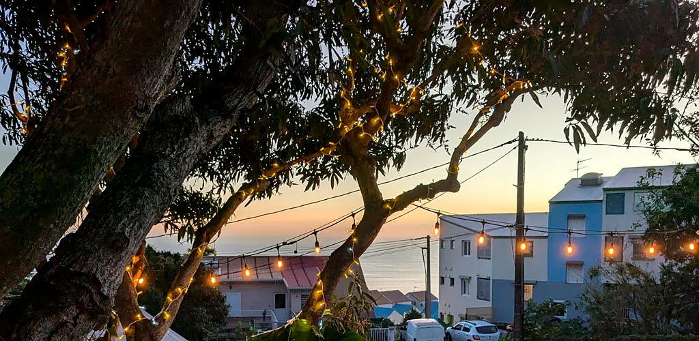
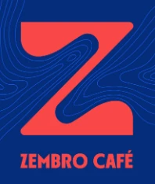
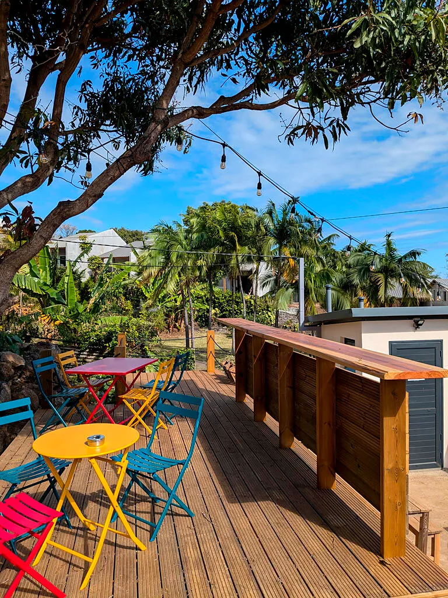
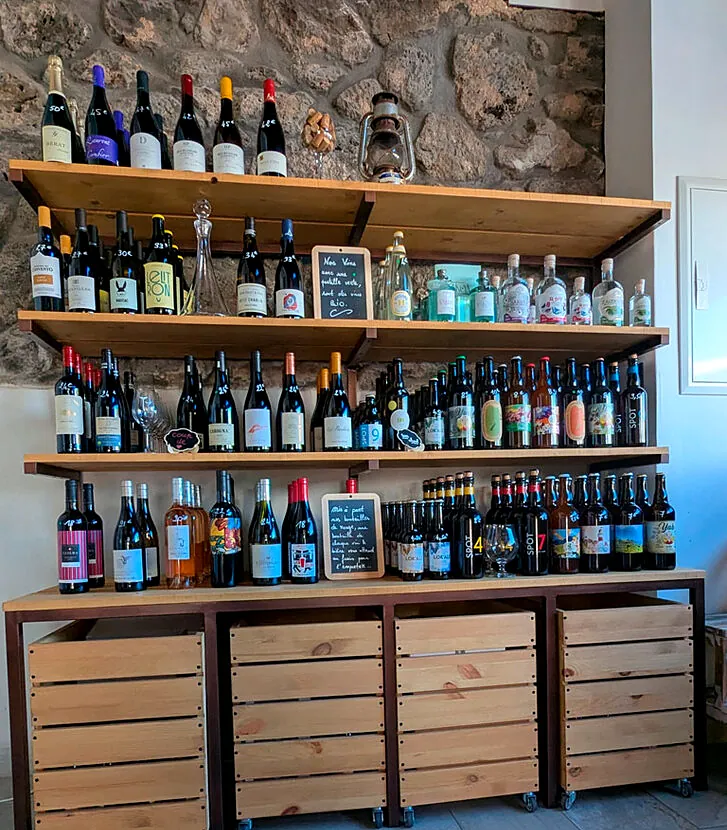
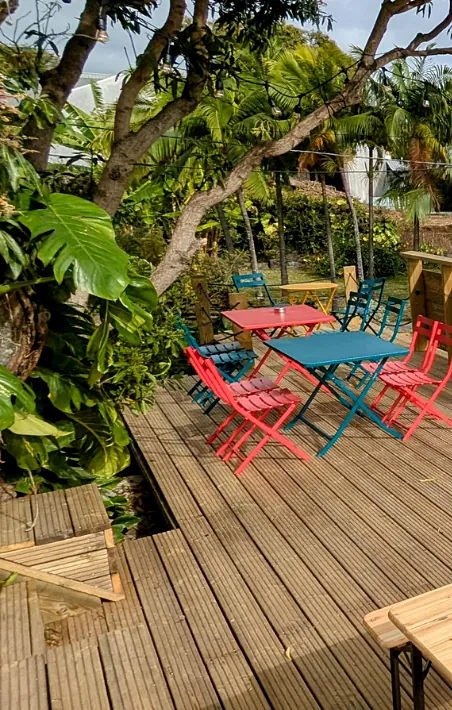
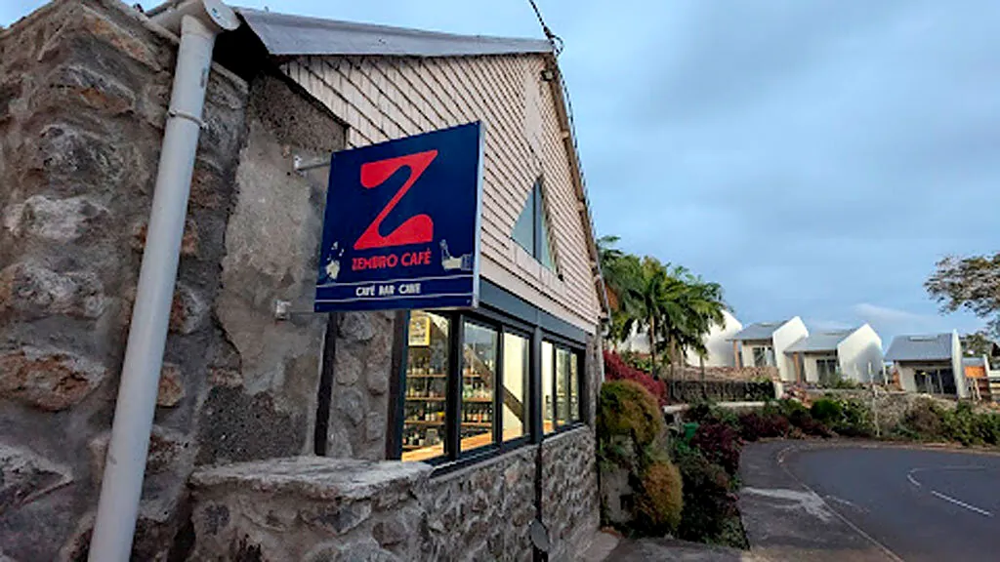

Café · bar · cave · concerts — Les Avirons
Zembro Café#ZcommeZembro
Café, thé, glaces, bières péi, vins et planches apéro ! Au calme sur la terrasse, et à emporter côté cave.
Cour Forcade · 11 bis avenue Général De Gaulle, Les Avirons
Le lieu
Le petit bar café cave du village
Aux Avirons, le Zembro Café est un lieu pour épicuriens, où l'on prend plaisir à passer du temps en bonne compagnie avec de bons produits, dans une ambiance guinguette et bon vivant.
« Nartrouv vitement ! »
#ZcommeZembro
Tables jaunes, rouges et turquoise sous le grand arbre, comptoir en bois face au jardin : ici, on vient pour un café l'après-midi, une bière péi à l'apéro ou un concert le samedi soir. Depuis mai 2026, une fresque murale signée par des graffeurs habille même la terrasse.


Au comptoir
De bons produits, simplement
Des boissons choisies avec soin, à savourer sur la terrasse ou à emporter.
Bières péi
Les bières locales artisanales, de Dalons à Chipek.
Vins
De toutes les couleurs et de tous les cépages.
Planches apéro
Fromage, charcuterie ou végé, à partager.
Café, thé, glaces
Pour une pause douce sur la terrasse, et de quoi se restaurer sur place.
La cave à emporter
Vins, bières et spiritueux artisanaux de La Réunion : gin, rhum, eaux de vie. Côté cave jusqu'à 21h.
L'abus d'alcool est dangereux pour la santé, à consommer avec modération.
Novembre 2026 au Zembro
Novembre c'est parti !
3 concerts, des jeux, de l'impro et du Beaujo. Novembre, le mois du beaujo
Banwar
Chante créole, joue du funk, amuse, danse, s'éclate sur scène, et c'est contagieux.
Toca Tambo
Afro, latino, créole : l'Amérique du Sud rencontre La Réunion, un vendredi 13 mémorable.
Le Zembro Quiz
Le quiz mensuel par équipe : culture gé et blind test. Thème : ras le bol.
Jazz manouche
Avec Fleur et Mano, quelques lyonnaiseries et du bon Beaujo !
L'impro des GranKer
Vos histoires, leur talent, et ça part en impro sur la terrasse.
Soirée jeux
Avec Kriké Kraké : ils ramènent les jeux, vous amenez votre mauvaise foi !
Les soirs d'événement, réservez votre table par message : c'est fortement conseillé, et ça se fait en deux minutes.
Réserver par messagePrêt de tireuse
Une belle blonde délicatement tirée ?
Pour vos événements à la maison, le Zembro Café vous prête sa tireuse, avec des fûts de 20 L de bières artisanales.
Prévenez 10 jours à l'avance pour valider la disponibilité des fûts.
Une caution est demandée au moment du prêt.
Toutes les infos sont dans le lien de la bio du Zembro, sur Facebook et Instagram.
Privatiser le lieu
Votre fête au Zembro
Besoin de privatiser le lieu ? La terrasse, les guirlandes et le comptoir juste pour vous et vos invités.
On en discute en direct au bar, ou par e-mail.

Offrir pour Noël
Un Noël aux couleurs du Zembro
Une bouteille de la cave
Un vin choisi au comptoir, des bières péi ou un spiritueux artisanal de La Réunion : le cadeau qui fait plaisir aux épicuriens.
La tireuse pour le réveillon
Des fûts de bières artisanales pour la grande tablée de fin d'année, à réserver 10 jours à l'avance.
Votre fête de fin d'année
Un afterwork ou un repas entre amis sur la terrasse, sous les guirlandes.
Le Zembro Café vous conseille directement, au bar ou par message.
Venir au Zembro
On vous attend sur la terrasse
Adresse · 11 bis avenue Général De Gaulle, Cour Forcade, 97425 Les Avirons
E-mail · zembrocafe@gmail.com
Réservations · par message sur Facebook ou Instagram
